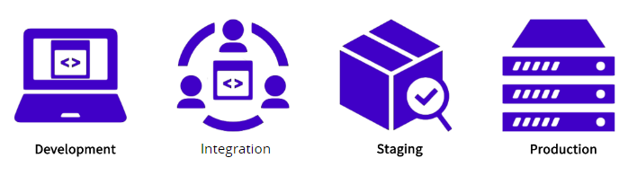

배포(Deploy)란 개발한 서비스를 사용자들이 이용 가능하게 하는 일련의 과정이다.
회사마다 추가적인 과정이 있을 수 있지만 기본적으로 4단계를 거쳐서 개발한 서비스를 배포하게 된다.

Development 단계는 각자의 컴퓨터에서 코드를 작성하고 테스트하는 과정이다.
개발 단계이기 때문에 실제 데이터를 이용하지 않고 더미 데이터를 이용해서 테스트한다.
Integration 단계는 각자의 컴퓨터에서 작성한 코드를 합치는 과정이다.
내가 작성한 코드가 다른 코드를 침범해서 오류를 일으키지 않는지 또는 코드 간에 conflict가 있지는 않은지 확인하는 과정을 거친다.
Staging 단계에서는 실제 출시 단계인 Production 단계와 가장 유사한 환경에서 테스트를 진행한다.
실제 데이터를 복사해서 문제가 있지 않은지 등 다양한 환경에서 테스트를 진행한다.
또한 서비스와 관련된 부서 혹은 인원의 확인 과정을 거친다.
예를 들면 작성된 코드가 마케팅팀 혹은 디자인팀이 예상했던 결과인지 확인을 거치는 과정이다.
Production 단계는 개발된 서비스를 출시하는 단계이다.
사용자가 접속할 수 있는 Production 환경에서 코드를 구동하고 서비스를 제공한다.
실제 데이터를 가지고 서비스가 운영되기 때문에 문제가 생기면 안 되는 단계이다.